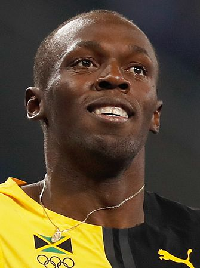

Usain St. Leo Bolt (Sherwood Content, 21 agosto 1986) è un ex velocista giamaicano, primatista mondiale dei 100 metri piani, dei 200 metri piani e della staffetta 4×100 metri. Soprannominato Lightning Bolt (fulmine), ha vinto in carriera 8 medaglie d'oro olimpiche e 11 mondiali ed è l'unico atleta nella storia ad avere vinto la medaglia d'oro nei 100 m piani e nei 200 m piani in tre edizioni consecutive dei Giochi olimpici (Pechino 2008, Londra 2012 e Rio de Janeiro 2016), oltre che in tre diverse edizioni dei campionati mondiali (Berlino 2009, Mosca 2013 e Pechino 2015). Ha inoltre detenuto fino al 2021 i record mondiali dei 200 m piani delle categorie under 20 e under 18, rispettivamente con 19"93 e 20"13. Gli ex primatisti mondiali Pietro Mennea e Michael Johnson lo hanno definito il più grande velocista di tutti i tempi. |
 |